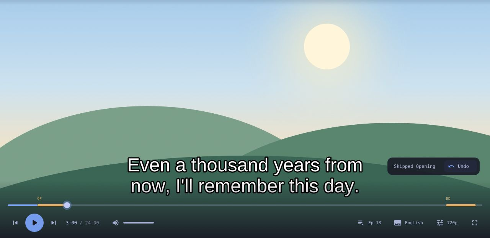
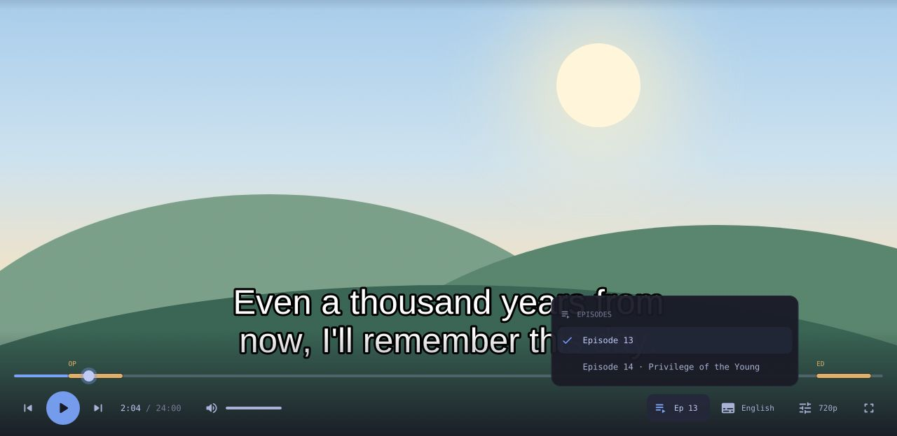

お任せ · LATEST RELEASE
otakase finds the episode, plays it in mpv, skips the opening and keeps AniList or MyAnimeList in sync. Free and open source.
DOWNLOAD →Its own player look with chapter marks and a next-episode card. Your own mpv settings stay as they are.
Openings, endings, recaps and filler episodes, skipped automatically or one key away.
AniList, MyAnimeList, both, or local only. Your progress updates when the episode ends.
Chromecast, DLNA TVs and Kodi, with skips and the next episode still working.
Pick up mid-episode, even on another computer.
Menus and player take your desktop's colours, from pywal and base16 to KDE, GNOME, macOS and Windows.


sudo apt install mpv curl
curl -Lo otakase https://github.com/TheXykril/otakase/releases/latest/download/otakase-linux-x86_64
chmod +x otakase
sudo install -Dm755 otakase /usr/bin/otakaseFor ARM64, download otakase-linux-arm64 instead. rofi, libnotify and ffmpeg are optional extras.
sudo pacman -S --needed go git mpv
git clone https://github.com/TheXykril/otakase.git
cd otakase
makepkg -siBuilds with the bundled PKGBUILD so pacman tracks it.
brew install mpv curl
curl -Lo otakase https://github.com/TheXykril/otakase/releases/latest/download/otakase-macos-universal
chmod +x otakase
sudo mv otakase /usr/local/bin/Works on Apple Silicon and Intel.
Or the standalone otakase-windows-x86_64.exe. Windows uses the terminal menus.
Coming from curd? Your settings, sign-ins and history move over on first launch.